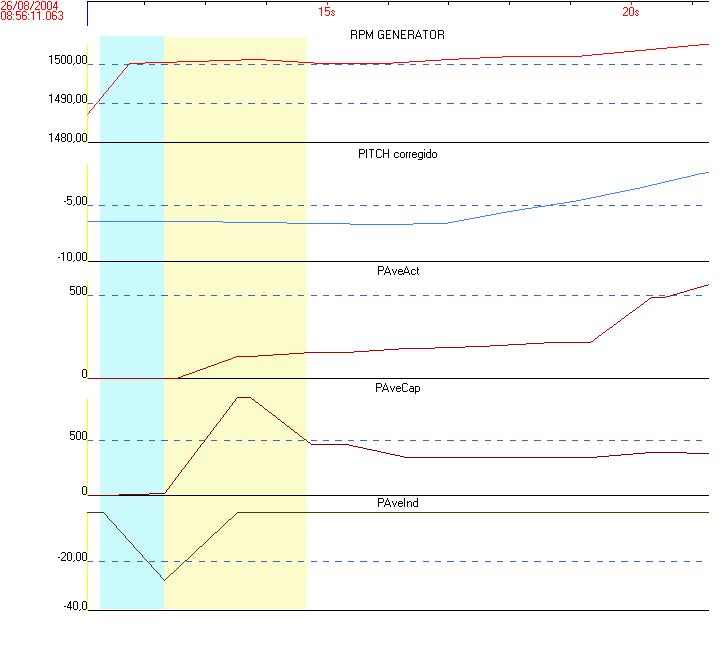

Esta práctica utiliza datos reales de un aerogenerador como el simulado, tomados con un muestreo de 1 muestra por segundo.
La Fig 1, mas abajo, muestra un zoom temporal correspondiente a la conexión del generador a la Red. La Fig 2 muestra un detalle ampliado con el intervalo inmediatamente antes y después de la conexión del generador a la Red.
El objetivo es que observe como es la evolución de variables clave. En particular observe el cambio brusco de la aceleración del tren de potencia en este tipo de aerogenerador, y de las principales variables eléctricas.

Fig 1.
La zona en azul muestra como el Controlador modifica el valor del pitch de forma que la aceleración del tren de potencia (señal "RPM GENERATOR") se mantiene constante, hasta que se llega a la conexión. La aceleración en esta zona es del orden de 23 rpms/segundo (= (1500 rpms - 800 rpms)/ 30 segundos). Cuando se pasa a producción esa aceleración es prácticamente 0 rpms/segundo: esto ocurre debido a que, en producción, la potencia extraída del viento es igual a l a potencia (eléctrica) entregada a la Red. Estos valores dan idea del esfuerzo mecánico al que están sometidos los componentes del tren de potencia, y la Torre, en el momento de conexión la Red.
Justamente cuando se produce la conexión del generador (primero de forma limitada por la conducción de los Tiristores y después por la activación de los Contactores de Bypass de los Tiristores) se produce un pico (importante) de consumo de potencia reactiva tipo "Inductivo" (señal "PAveInd"). Esta potencia corresponde a la corriente que circula por el estator del generador en los momentos iniciales, para constituir el flujo magnético necesario para que exista la "máquina de inducción".
Inmediatamente después se produce un pico de potencia reactiva de tipo "Capacitivo" (señal "PAveCap") característico del ajuste de deslizamiento (slip), desde el paso por sincronismo (slip = 0) al valor final, correspondiente a la potencia mecánica que fuerza el eje. Ver Introducción a las máquinas de inducción . Fíjese que el valor inicial de esta potencia es significativo respecto a la potencia activa (señal "PAveAct") que finalmente se entrega a la Red.
La figura siguiente muestra las mismas señales pero con un zoom con mas resolución temporal, justo en el momento de la conexión.

Fig 2.